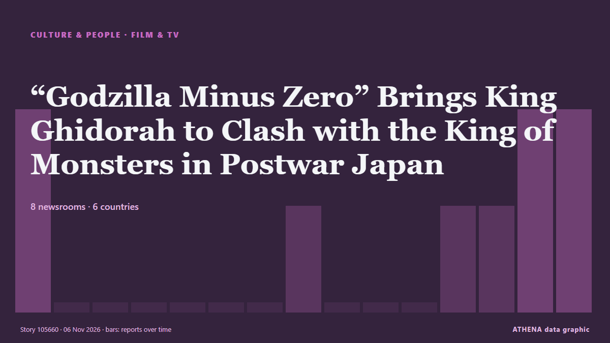

Кино и ТВ
СпонсорПри поддержке  Cybernetics and Artificial Intelligence Lab Welcome to the Cybernetics and Artificial Intelligence Laboratory, established at the Department of Business Administration of the National and Kapodistrian University of Athens. The lab is headed by Professor Dimitrios Thomakos. The lab aims to do research that can be published in top venues. Our research uses tools and methods of Artificial Intelligence, and lies in the following areas: - Forecasting - Decision making - Cyber security - Finance We are always looking forward to collaborating with exceptional students!
Cybernetics and Artificial Intelligence Lab Welcome to the Cybernetics and Artificial Intelligence Laboratory, established at the Department of Business Administration of the National and Kapodistrian University of Athens. The lab is headed by Professor Dimitrios Thomakos. The lab aims to do research that can be published in top venues. Our research uses tools and methods of Artificial Intelligence, and lies in the following areas: - Forecasting - Decision making - Cyber security - Finance We are always looking forward to collaborating with exceptional students!
| 24 окт. | 0 |
|---|---|
| 25 окт. | 0 |
| 26 окт. | 0 |
| 27 окт. | 1 |
| 28 окт. | 0 |
| 29 окт. | 0 |
| 30 окт. | 1 |
| 31 окт. | 0 |
| 1 нояб. | 2 |
| 2 нояб. | 5 |
| 3 нояб. | 4 |
| 4 нояб. | 4 |
| 5 нояб. | 6 |
| 6 нояб. | 0 |
Заголовки приводятся на английском языке, как они были опубликованы.

“Godzilla Minus Zero” Brings King Ghidorah to Clash with the King of Monsters in Postwar Japan
The 2023 Godzilla Minus One was the first Japanese film to win an Oscar for best visual effects. из Nippon.com
‘The Odyssey’ Takes Imax to Biggest Quarterly Revenue to Date
After a record-breaking summer season, Imax swung to its best-ever revenue and profits during the third quarter of 2026. из Variety
'Godzilla Minus Zero2 gets loud applause at Tokyo film festival
Since the release of Godzilla Minus One in 2023, things have gotten a bit crazy... из Empire
Texas’ New Attorney General Nathan Johnson Is a Former ‘Dragon Ball Z’ Composer
Johnson composed the musical scores for 67 episodes and five movies. из Billboard
‘The Cat In The Hat’ Rotten Tomatoes Reviews Split Over Animated Adaptation Of Dr. Seuss’ Classic Tale
"The Cat in the Hat," starring Bill Hader as the voice of Dr. из Forbes Business
At ‘China’s Hollywood,’ visitors become stars as consumers spend more on experiences
Since the experience launched in August, Hengdian World Studios said more than 2,000 people had taken part, with bookings full on most days. из CNA (Channel NewsAsia)
Johnny Depp teases possible return as Jack Sparrow in ‘Pirates of the Caribbean 6’
Johnny Depp is finally sounding off about the possibility of returning as Jack Sparrow in “Pirates of the Caribbean 6.” Speaking to Entertainment Tonight on his “Ebenezer” press tour, the Oscar… из Variety
After Tusshar Kapoor, Ayushmann Khurrana Gets Extortion Call From 'Lawrence Bishnoi Gang'
Actor Tusshar Kapoor recently received a similar threatening audio message from a caller identifying as 'Harry Boxer'. из NDTV
Disney’s ‘The Remarried Empress’ Is Stunning, But A Very Slow Burn
This post contains spoilers of Disney+ /Hulu's anticipated Korean drama, The Remarried Empress. из Forbes Business
Ben Wang Circling Iceman Role In Marvel’s ‘X-Men’
EXCLUSIVE: Ahead of the release of The Hunger Games: Sunrise on the Reaping, where he plays District 12 tribute Wyatt Callow, Ben Wang has entered talks to play Iceman in Marvel Studios’ new X-Men… из Deadline
Disney’s Pixar names Jonathan Garson president as Jim Morris steps back
Jonathan Garson, most recently Pixar’s general manager, has been with the studio since 2010 and Disney for more than 30 years. из Free Malaysia Today
‘Beef’ Creator Lee Sung Jin Launches Production Company, Plans Ali Wong Limited Series
Hyunji Ward will run Lee's Lila Pictures, which also has a Gene Hong drama series in development. из The Hollywood Reporter
Italian director Tinto Brass dies aged 93
(ANSA) - ROME, 04 NOV - Italian director Tinto Brass died in Rome on Wednesday at the age of 93, his wife Caterina Varzi and his children Bonifacio and Beatrice Brass told ANSA. из ANSA English
Wicker movie review: Olivia Colman, Alexander Skarsgard shine in a strange, wondrous fable
Directed and written by Alex Huston Fischer and Eleanor Wilson, the film stars Olivia Colman and Alexander Skarsgard. из Scroll.in
Spanish-French Drama "La Bola Negra" Wins Feature Film Grand Prix at Cinelibri International Book to Film Festival
La Bola Negra has won the audience award at this year’s London Film Festival. из Deadline
Cannes to Host First World Quantum Cannes Festival on November 17-18
Insider Brief PRESS RELEASE — Local governments and academic researchers are the driving force behind the World Quantum Cannes Festival, a pioneering event dedicated to quantum technology, taking… из The Quantum Insider
Kathy Hochul’s Win in New York Assures a Hollywood Home for Years to Come
The pro-entertainment governor coasted to victory. из The Hollywood Reporter